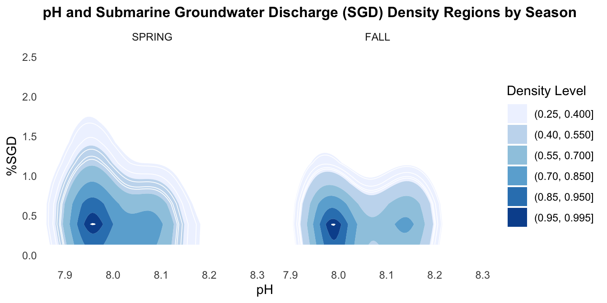

library(tidyverse)
library(here)
library(ggplot2)
library(dplyr)
library(tidyr)
library(ghibli)
library(beepr)
library(kableExtra)
library(tidyplots)Week 06 Quarto Homework
knitr: opts_chunk: fig.path: “../Output/”
Week 06 Homework
Homework
- Take any of the data sheets you have already worked with in class and create at least one table and one figure in an Quarto file.
- Create the most beautiful Quarto output you can in either an html, github doc, or pdf format. RENDER THE FILE
- Make sure you have headings with clear explanations of what you are doing.
- Practice using markdown formatting with bold, italics, and lists (use each of these at least once).
- Make sure your outputs and scripts are saved in the appropriate folders. Keep proper coding etiquette (figures need to be pub quality as usual and you need to comment your code).
Load Libraries
Read Data
ChemData<-read_csv(here("Week_04","data", "chemicaldata_maunalua.csv"))
glimpse(ChemData)Rows: 355
Columns: 15
$ Waypoint <dbl> 1, 2, 3, 4, 5, 6, 7, 8, 9, 10, 11, 12, 13, 14, 15, 16, 17,…
$ Zone <chr> "Transition", "Transition", "Transition", "Transition", "D…
$ Lat <dbl> 21.27531, 21.27523, 21.27504, 21.27449, 21.27503, 21.27485…
$ Long <dbl> -157.7618, -157.7627, -157.7633, -157.7640, -157.7617, -15…
$ Site <chr> "W", "W", "W", "W", "W", "W", "W", "W", "W", "W", "W", "W"…
$ Season <chr> "SPRING", "SPRING", "SPRING", "SPRING", "SPRING", "SPRING"…
$ Tide_time <chr> "Low_Day", "Low_Day", "Low_Day", "Low_Day", "Low_Day", "Lo…
$ Temp_in <dbl> 23.75506, 23.53256, 22.63450, 24.01982, 23.26102, 24.00517…
$ Salinity <dbl> 27.74029, 30.61192, 28.37008, 32.82124, 29.12293, 34.02018…
$ Phosphate <dbl> 0.54, 0.36, 0.50, 0.25, 0.50, 0.13, 0.28, 0.15, 0.23, 0.11…
$ Silicate <dbl> 157.93, 92.59, 143.60, 42.32, 126.47, 15.04, 56.31, 23.10,…
$ NN <dbl> 7.92, 3.37, 7.29, 0.79, 7.45, 0.46, 1.59, 0.34, 1.91, 0.25…
$ pH <dbl> 7.909, 7.965, 8.023, 7.995, 8.005, 8.019, 8.003, 7.978, 7.…
$ TA <dbl> 2161.482, 2145.828, 2272.391, 2219.583, 2151.826, 2216.758…
$ percent_sgd <dbl> 20.4043928, 11.9625323, 18.5529716, 5.4677003, 16.3397933,…Make a Plot
This is looking at the relationship between penguin pH, %SGD, and Season.
I wanted to try a density plot from ggplot to make the data visualization awesome. I’m still trying to understand this data in the right context, but it was good practice to struggle with the making of this plot.

When you look Figure 1 we can see the density differences between pH and %SGD between Fall and Spring.
Make a Table
ChemData_clean %>%
drop_na() %>%
pivot_longer(cols = c(pH, percent_sgd), #make data longer
names_to = "Variable",
values_to = "Value") %>%
mutate(Variable = dplyr::recode(Variable, percent_sgd = "%SGD")) %>% # rename variable
group_by(Season, Variable) %>%
summarise(Variable_mean = mean(Value, na.rm = TRUE)) %>% # get mean
kbl(col.names = c("Season","Variable","Mean")) %>% # make it a kable table and rename headers
kable_classic_2() %>% # add a theme
row_spec(1, bold = TRUE, color = "white", background = "blue") %>% # highlight row 3
row_spec(3, bold = TRUE, color = "white", background = "orange") %>%
kable_styling(full_width = FALSE) # make it less wide| Season | Variable | Mean |
|---|---|---|
| SPRING | %SGD | 2.107294 |
| SPRING | pH | 8.031429 |
| FALL | %SGD | 1.867324 |
| FALL | pH | 8.038212 |
Table 1 has information on the mean values for pH and %SGD by different seasons.
Beep when the code is done running…
beep(10)Thank you Nyssa and Callie!
Extra
Some Extra Stuff:
To-Do before running code:
.rs.restartR()
rm(list = ls())
Need to go to Office Hours with help rendering as a gfm format. It looked terrible when I did it.
format: gfm
prefer-html: true
Also couldn’t figure out how to change the background color of themes even using the Quarto website.